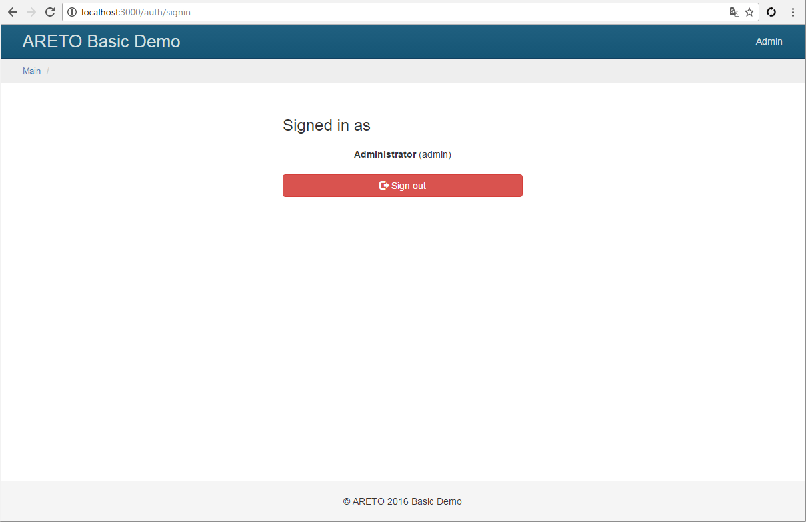

Права доступа
Для авторизации в фреймворке Areto используется ролевая система разделения прав доступа (Role Based Access Control).

Пример реализации концепции RBAC, если требуется авторизовать доступ к удалению статьи.
Сначала создается разрешение deleteArticle, которое описывает защищаемый функционал.
Затем создается роль editor, которая присваивается пользователю,
а к ее наследникам добавляется разрешение deleteArticle.
В действие контроллера вставляется проверка пользователя на наличие разрешения deleteArticle при попытке
удалить статью.
Добавьте в файл конфигурации приложения компонент rbac,
реализация которого содержится в areto/rbac/Manager.
config/default.js
По умолчанию для настроек доступа используется файловое хранилище.
Создайте файл rbac/items c описанием ролей и разрешений.
Роль может наследовать как разрешения, так и другие роли.
Разрешение же не может наследовать роли.
Разрешение updateOwnArticle закрыто правилом author,
которое защищает статью от редактирования кем-либо, кроме автора.
Для правки всех статей добавьте разрешение updateArticle
и назначьте его роли редактора блога.
В ролях представлена типовая иерархия блога:
reader- может просматривать объекты.author- наследует праваreader, а также может редактировать собственные статьи.editor- наследует праваauthor, а также может редактировать любые статьи.moderator- наследует праваauthor, а также может редактировать комментарии.admin- наследует праваeditor, moderator.
rbac/items.js
Файл rbac/rules содержит описание правил для разрешений (ролей).
Правило - это своеобразный замок, который накладывается на разрешение
и проверяется в момент запроса доступа.
Правило author разрешает доступ к объекту только автору данного объекта.
rbac/rules.js
Файл rbac/assignments содержит связки пользователей с назначенными ролями.
В данном случае он пустой, потому что хранение роли осуществляется в атрибуте role модели пользователя.
Это реализовано в переопределенном методе getAssignments класса model/User.
rbac/assignments.js